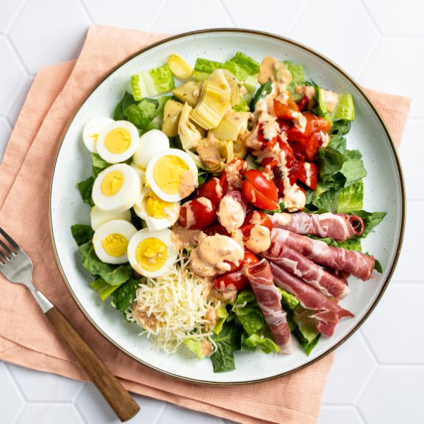

Italian-Style Chef Salad with Prosciutto, Cheese & Marinated Veggies

Total Time
25 min
Nutrition (per serving)
582.6 kcalCalories
33.8 gProtein
24.8 gCarbs
40 gFat
Full nutrition table
| Calories | 582.6 kcal |
| Total fat | 40 g |
| Saturated fat | 12.1 g |
| Trans fat | 0.3 g |
| Cholesterol | 380.1 mg |
| Sodium | 1879.9 mg |
| Carbohydrates | 24.8 g |
| Fiber | 6.3 g |
| Sugars | 13.4 g |
| Protein | 33.8 g |
| Potassium | 925.3 mg |
| Calcium | 369.1 mg |
| Iron | 3.4 mg |
| Vitamin A | 12379.2 IU |
| Vitamin C | 44.2 mg |
| Vitamin D | 3.9 IU |
Cookware
Ingredients
- 2 (6 oz) jarsartichoke hearts, marinated
- 1 pintgrape tomatoes
- 8hard-cooked eggs, peeled
- ½ cupItalian salad dressing
- 12 slicesprosciutto
- 1 (12 oz) jarroasted red bell peppers
- 4 heartsromaine hearts
- 1 ⅓ cupsshredded cheese, Italian blend
- mayonnaise
- salt
Steps
- Place dressing, mayo, and salt in a small bowl. Stir to combine and set aside.½ cup Italian salad dressing
¼ cup mayonnaise
¼ tsp salt - Drain and roughly chop roasted peppers and artichoke hearts. Transfer both to a plate.1 (12 oz) jar roasted red bell peppers
2 (6 oz) jars artichoke hearts, marinated - Cut or tear each slice of prosciutto in half; roll each piece and add to the plate with the roasted peppers and artichokes.12 slices prosciutto
- Slice eggs crosswise. Season with salt and add to the plate.8 hard-cooked eggs, peeled
⅛ tsp salt - Wash, dry, and halve tomatoes lengthwise. Add to the plate.1 pint grape tomatoes
- Wash, dry, and chop (or tear) lettuce into bite-sized pieces.4 hearts romaine hearts
- To serve, divide lettuce between plates or bowls. Top with roasted peppers, artichoke hearts, prosciutto, eggs, tomatoes, and cheese. Drizzle with the dressing and enjoy!1 ⅓ cups shredded cheese, Italian blend